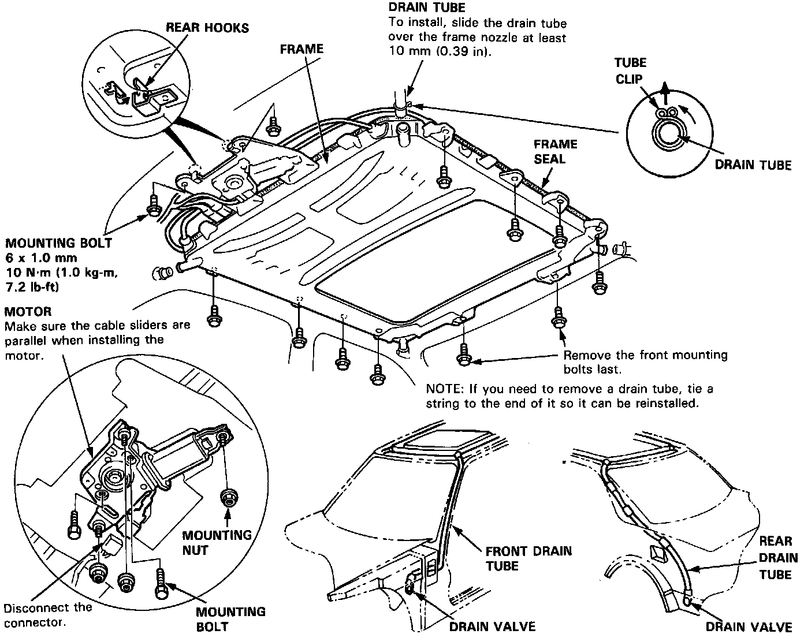

Motor, Drain Tube and Frame Replacement
Motor, Drain Tube and Frame ReplacementCAUTION: Be careful not to damage the seats, dashboard and other interior trims.

1. Remove the glass and headliner.
2. Disconnect the motor and relay wire harness; remove the clips securing the ceiling light wire harness.
NOTE: When removing the motor, remove the two mounting bolts and three nuts.
3. Disconnect the drain tubes.
4. Remove the 12 mounting bolts and rear hooks, then remove the frame from the car.
NOTE: You may require assistance when removing the frame.
5. To install, insert the frame's rear hooks into the body holes, then install parts in the reverse order of removal.
NOTE:
^ Install the tube clips with the ends facing upward to ease installation of the headliner.
^ Clean the surface of frame.
^ Check the frame seal.
^ Check for water leaks.